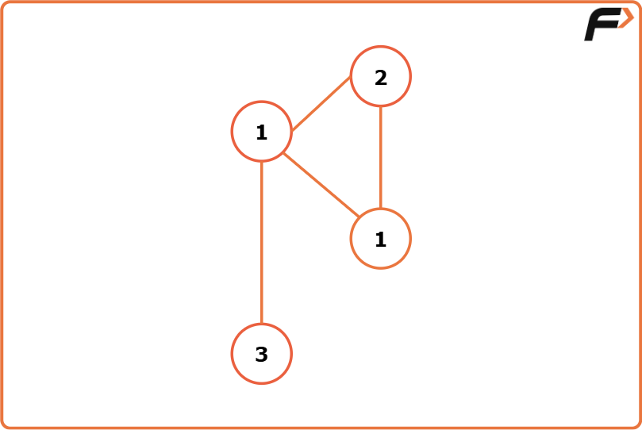
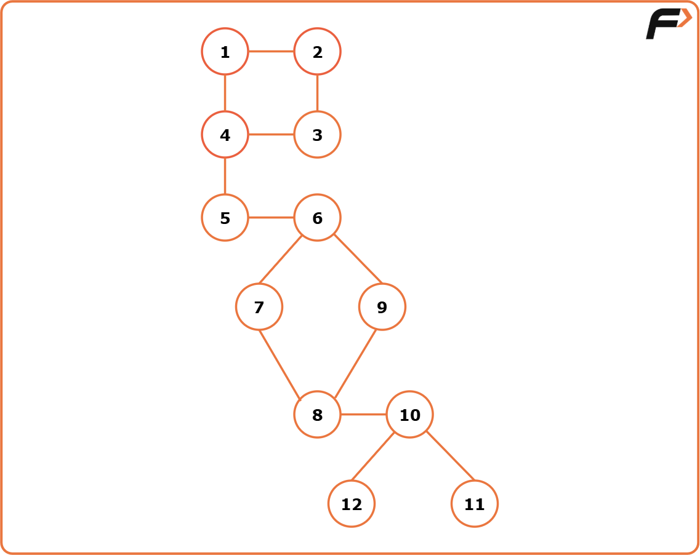

Bridges in Graph - Using Tarjan's Algorithm of time in and low time: G-55
Problem Statement: There are n servers numbered from 0 to n - 1 connected by undirected server-to-server connections forming a network where connections[i] = [ai, bi] represents a connection between servers ai and bi. Any server can reach other servers directly or indirectly through the network.A critical connection is a connection that, if removed, will make some servers unable to reach some other servers. Return all critical connections in the network in any order.
Examples
Example 1: Input Format: N = 4, connections = [[0,1],[1,2],[2,0],[1,3]] Result: [[1, 3]] Explanation: The edge [1, 3] is the critical edge because if we remove the edge the graph will be divided into 2 components.
Example 2: Input Format N = 12, connection=[[1,2], [1,4], [2,3], [3, 4], [4, 5], [5, 6], [6, 7], [7, 8], [6, 9], [8, 9], [8, 10], [10, 11], [10, 12]] Result: [[4, 5], [5, 6], [8, 10]] Explanation: If we remove any of the three edges, the graph will be divided into 2 or more components.
Disclaimer: Here is the practice link to help you assess your knowledge better. It's highly recommend trying to solve it before looking at the solution.
Approach
Algorithm
- First, we need to create the adjacency list for the given graph from the edge information(If not already given). And we will declare a variable timer(either globally or we can carry it while calling DFS), that will keep track of the time of insertion for each node.
- Then we will start DFS from node 0(assuming the graph contains a single component otherwise, we will call DFS for every component) with parent -1.
- Inside DFS, we will first mark the node visited and then store the time of insertion and the lowest time of insertion properly. The timer may be initialized to 0 or 1.
- Now, it’s time to visit the adjacent nodes.
- If the adjacent node is the parent itself, we will just continue to the next node.
- If the adjacent node is not visited, we will call DFS for the adjacent node with the current node as the parent. After the DFS gets completed, we will compare the lowest time of insertion of the current node and the adjacent node and take the minimum one. Now, we will check if the lowest time of insertion of the adjacent node is greater than the time of insertion of the current node. If it is, then we will store the adjacent node and the current node in our answer array as they are representing the bridge.
- If the adjacent node is already visited, we will just compare the lowest time of insertion of the current node and the adjacent node and take the minimum one.
- Finally, our answer array will store all the bridges.
Code
#include <bits/stdc++.h>
using namespace std;
class Solution {
private:
int timer = 1; // Global timer to assign discovery times
// Depth-First Search (DFS) to find bridges
void dfs(int node, int parent, vector<int> &vis,
vector<int> adj[], int tin[], int low[],
vector<vector<int>> &bridges) {
vis[node] = 1; // Mark current node as visited
tin[node] = low[node] = timer; // Set discovery time and low-link value
timer++;
for (auto it : adj[node]) { // Explore all adjacent nodes
if (it == parent) continue; // Skip the edge to parent
if (vis[it] == 0) {
// If neighbor is unvisited, recurse
dfs(it, node, vis, adj, tin, low, bridges);
// Update low-link value of current node
low[node] = min(low[node], low[it]);
// Check if the edge is a bridge
if (low[it] > tin[node]) {
bridges.push_back({it, node});
}
} else {
// Back edge: update low-link value
low[node] = min(low[node], low[it]);
}
}
}
public:
vector<vector<int>> criticalConnections(int n,
vector<vector<int>>& connections) {
// Step 1: Build adjacency list
vector<int> adj[n];
for (auto it : connections) {
int u = it[0], v = it[1];
adj[u].push_back(v);
adj[v].push_back(u);
}
// Step 2: Initialize helper arrays
vector<int> vis(n, 0);
int tin[n]; // Discovery time
int low[n]; // Lowest reachable time
vector<vector<int>> bridges;
// Step 3: Run DFS (assuming graph is connected)
dfs(0, -1, vis, adj, tin, low, bridges);
return bridges;
}
};
int main() {
int n = 4;
vector<vector<int>> connections = {
{0, 1}, {1, 2}, {2, 0}, {1, 3}
};
Solution obj;
vector<vector<int>> bridges = obj.criticalConnections(n, connections);
cout << "Critical Connections (Bridges): ";
for (auto it : bridges) {
cout << "[" << it[0] << ", " << it[1] << "] ";
}
cout << endl;
return 0;
}
Complexity Analysis
Time Complexity: O(V+2E), where V = no. of vertices, E = no. of edges. It is because the algorithm is just a simple DFS traversal.
Space Complexity: O(V+2E) + O(3V), where V = no. of vertices, E = no. of edges. O(V+2E) to store the graph in an adjacency list and O(3V) for the three arrays i.e. tin, low, and vis, each of size V.